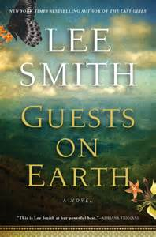

Lee Smith’s has long written perceptively about Southern women (Family Linen, Oral History, Saving Grace), and her new novel, Guests on Earth, is no exception. Grounded in the 1948 burning of the Highland Hospital in Asheville, North Carolina, the novel tells the story of an orphan from New Orleans, Evalina Toussaint, who is admitted to the hospital as a young girl and lives out much of her young life there, as patient and guest.
{kind=link}
Readers may already be aware that Zelda Fitzgerald, the hospital’s most famous patient, died in the fire, but the details of her frenetic dancing and painting add drama and shape to the novel. Fitzgerald is not the center of this story, however; she comes and goes, as she did in life. It is Evalina’s early life with a disturbed, talented mother and her episodes of friendship, rivalry, and partnership with the various inhabitants of Highland that drive the plot.
The novel is episodic and covers a long period of time. Evalina comes to the hospital, grows up, leaves for a while and returns; she makes friends and loses them; she falls into and out of love. The fates of patients who have left is sometimes reported second- or third-hand. The sequences are loosely connected, mostly by the proximity of Evalina to the persons, events, and reporting of news. The “Intermezzo” section, which tells several years of Evalina’s young adulthood through letters, departs even more radically from the conventional narration of the rest.
What holds the novel together is the evolution of Evalina’s character. She comes to Highland a frightened child, having already lived through her mother’s and a humiliating Jane-Eyre-like experience of living with her mother’s lover’s wife and children. But she is the novel’s narrator—a rather old-fashioned intrusive one at that—and she establishes her credibility on the first page. So as the other patients appear, disappear, and sometimes reappear, Evalina can be trusted to describe them and comment on their various illnesses, and the novel becomes both a fictional memoir and a commentary on both the history mental health treatment and the pressures that drive unusual personalities into “insanity.”
Several of the female characters, including Fitzgerald, are driven to the hospital by their inability to live the professional lives they seek, by their unhappy, inescapable marriages, or by seemingly well-meaning judges who misinterpret desperation or sexual assertion as “moral imbecility.” But this is not just a book about women, though they figure largely in the number of Highland’s patient list. The young boy Robert, whose genius and social awkwardness mark him for institutionalization, the war veteran suffering from shell shock, and the young man called Pan, who prefers to live outdoors all find refuge—for a time—in the progressive treatments at the hospital.
Some readers will find the “Intermezzo” section odd, and there are a few episodes, such as the one late in the novel when a friend returns with two men and tries to convince Evalina to run off with them, go nowhere (In this case Evalina turns down the invitation and returns to the hospital). Other readers may object that the historical figure of real interest is Zelda Fitzgerald, and her intermittent appearance is a flaw in the structure. In this instance, however, the absences of the more famous historical figures actually keeps the focus on the variety and number of other, equally complex and valuable persons who inhabit the hospital.
The way Zelda Fitzgerald comes and goes also keeps the center of the narrative on Evalina, and when she connects the memory of Zelda with the memory of her mother, Evalina ties the book together very nicely indeed. The mother seems to disappear from the story when she dies, but in fact she has lived on in the empathetic responses of her daughter, whose refusal to judge harshly, in turn, creates empathy for the misunderstood, misdiagnosed, and often mistreated characters who find their ways to the hospital.
As a historical novel, then, Guests on Earth is somewhat unusual. The great cataclysmic cultural and political events, such as war and changing notions of the human mind, are certainly present, but they do not loom over the entire book. Nor is the story dominated by a larger-than-life historical figure. This is a quiet novel, and its most moving tragedies are local, domestic, and often private, yet they are tragedies all the same, and the as book seems to wind its way through these many lives, it keeps its compass firmly pointed on Evalina. The ending seems inevitable, though certainly not predictable, and with the skill of a master novelist, Lee Smith brings together all of the narrative paths to a single, beautiful moment in a conclusion that stops the story not so much at completion as at a satisfying stepping-stone back into the present day.
Pingback: Lee Smith’s Guests on Earth | Sarah Kennedy